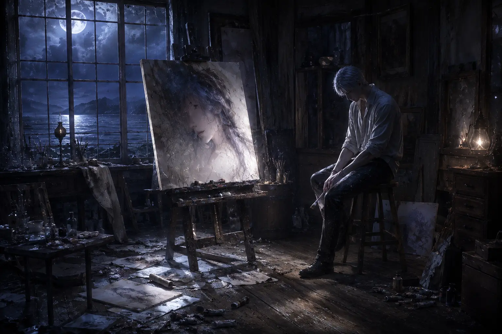
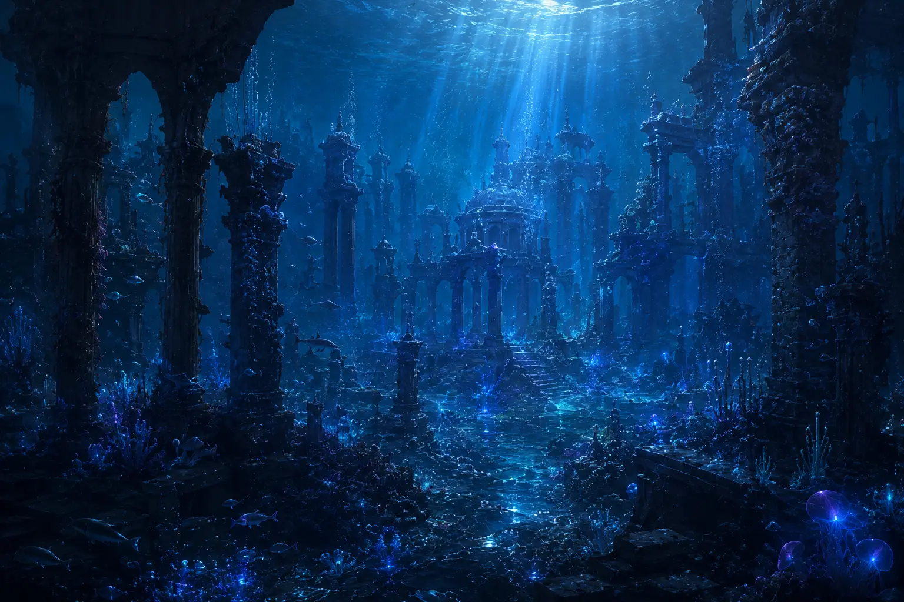
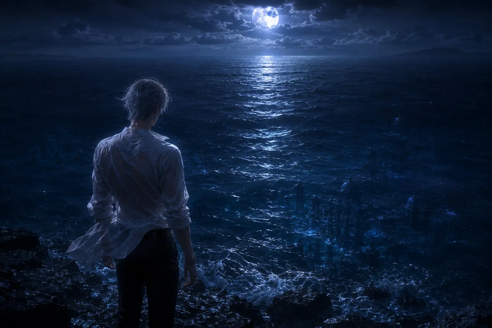
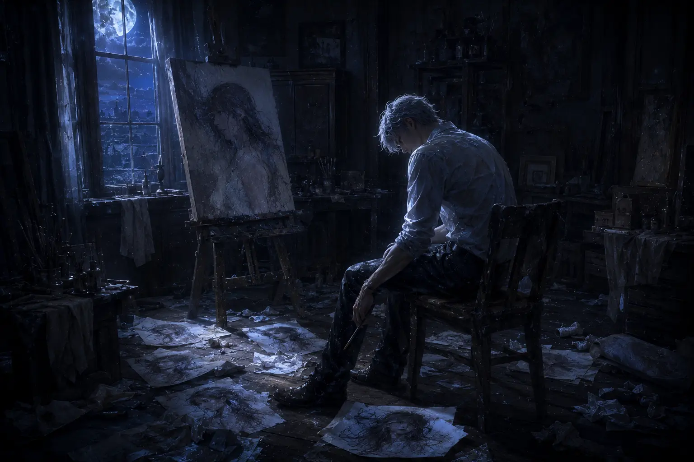

The artist, the liar, the prince of a kingdom that no longer exists.
Here's the thing about Rafayel that no one tells you upfront.
You're supposed to dismiss him.
That's by design. His design, not the game's. Rafayel wants you to roll your eyes. He wants you to label him as "the bratty artist," "the whiny one," "the comic relief." Every lazy stretch of his arms, every dramatic sigh, every time he complains about sand getting in his shoes or a commission deadline stressing him out — it's all part of the same performance.
And it's a brilliant performance.
Because the more you underestimate him, the safer he feels.
I didn't understand this at first. Like most players, I met Rafayel and immediately filed him under "annoying but harmless." Xavier was mysterious. Zayne was reliable. Sylus was dangerous. Rafayel was just... there. Complaining. Painting. Making everything about himself.
Then I started paying attention to the spaces between his words.
The way his eyes go hollow when he thinks no one is watching. The way he deflects every sincere moment with a joke — not because he's shallow, but because sincerity terrifies him. The way he says "don't worry about me" like he's rehearsed it a thousand times, hoping someone will eventually ignore him and worry anyway.

Figure 1: Rafayel in his natural habitat — surrounded by canvases, hiding in plain sight.
This is not the story of a spoiled artist.
This is the story of a prince who drowned, crawled back to shore, and has been pretending to breathe ever since.
Let's start with the most obvious question: why does Rafayel avoid combat?
On the surface, the answer seems simple. He's an artist, not a fighter. His Evol is water-based, which feels less aggressive than Zayne's ice or Sylus's shadow. He complains about exertion. He'd rather be painting than fighting. Case closed, right?
Wrong.
Look closer at the moments when Rafayel does fight. His movements aren't clumsy — they're calculated. Every dodge is precise. Every water construct is deliberate. He doesn't lack skill. He lacks desire. There's a difference, and it's a difference that tells you everything about who he really is.
In combat sequences where the MC is in genuine danger, Rafayel's entire demeanor shifts. His posture straightens. His eyes sharpen. The whining stops. He doesn't fight for glory or sport — he fights when there's no other choice. And in those moments, he is terrifyingly capable.
This isn't incompetence. This is restraint. He's spent centuries learning to hold back because showing his true power means revealing his true self.
Think about what Rafayel is hiding. A prince of Lemuria. A being who has lived for over a thousand years. Someone who watched his entire civilization sink beneath the waves. If he wanted to be powerful — visibly, undeniably powerful — he could be. But power draws attention. Attention invites questions. And questions lead to the one thing he fears most: being truly seen.
The laziness is armor. The complaints are camouflage. Rafayel has constructed an entire persona designed to make people look away, and it works beautifully — until someone refuses to look away. Until the MC refuses to look away.
And that's when the mask starts to crack.
To understand Rafayel, you have to understand loss.
Not the abstract concept of loss. Not "I lost my phone" or "I lost a friendship." I mean the kind of loss that rewires your DNA. The kind that leaves you standing on a shore, staring at an ocean that used to be your home, knowing you can never go back.
In the lore scattered across memory fragments and hidden dialogues, Lemuria was not just a kingdom — it was Rafayel's entire world. His people. His culture. His identity. When it sank, it didn't just take buildings and treasures. It took the version of himself that existed before the tragedy.
He became a refugee in a world that didn't know he existed. An immortal in a world of mayflies. A prince with no throne.
What does that do to a person?
I've thought about this a lot. If you live long enough — centuries long enough — everything becomes temporary. Friendships. Loves. Cities. Languages. Everything you build will eventually crumble. Everyone you love will eventually leave, either by choice or by death.
So what do you do?
Some immortals in fiction become conquerors. They leave their mark on the world because they're terrified of being forgotten. Others become hermits, hiding from attachment because attachment is just pre-grief.
Rafayel chose a third path. He became invisible. Not literally — his looks alone make that impossible. But invisible in the ways that matter. He made himself forgettable. Annoying. Someone you'd walk past without a second glance.

Figure 2: The ruins of Lemuria — what remains when an entire civilization becomes a ghost story.
But here's the thing about invisibility: it's lonely.
Really, truly, soul-crushingly lonely.
You can see it in Rafayel's art. He paints oceans. He paints figures standing at the water's edge. He paints the same face, over and over, in different lights, different moods — a face he's trying not to forget. The MC's face. The one person who looked at him and didn't look away.
"He remembers the salt on his lips. The voices of his people. The way the light filtered through the coral walls. He remembers everything. That's the curse. That's always been the curse."
Rafayel doesn't talk about Lemuria. Not really. He drops hints — a melancholic comment about the ocean, a distant look when someone mentions the past — but he never tells the full story. Because the full story is too heavy. Because saying it out loud would make it real. And if it's real, then he has to carry it.
He's been carrying it alone for a thousand years.
This is where things get... complicated.
Because if Rafayel has been hiding for centuries, why does he stay near the MC?
She's the opposite of invisible. She's a hunter. She's constantly in danger. She attracts attention — the wrong kind of attention — everywhere she goes. Being near her is the least strategic choice Rafayel could make if his goal is to remain unnoticed.
Unless his goal was never to remain unnoticed.
Unless his goal was always her.
Hidden dialogue and memory fragments suggest that Rafayel's connection to the MC predates the events of the game. Way predates. As in: centuries predates. Reincarnation. Fate. A bond that transcends individual lifetimes. Rafayel has been waiting for her — not for a few years, but across multiple incarnations, multiple deaths, multiple rebirths.
He didn't accidentally become an artist in Linkon City. He chose to be there. He's been choosing her, over and over, for a thousand years.
Let that sink in.
Imagine loving someone so much that you follow them through death. Imagine watching them be born, live, die — and then waiting for them to come back, not knowing if they'll remember you, not knowing if they'll love you this time, not knowing if you'll have to watch them die all over again.
That's not romantic. That's devastating.
This changes everything about how we interpret Rafayel's behavior. His defensiveness isn't just about protecting himself — it's about protecting her from the weight of a history she can't recall. His reluctance to get close isn't coldness — it's the fear of loving her and losing her again. Again. And again. And again.

Figure 3: Rafayel at the shore — a place he returns to when the weight of memory becomes too heavy.
The thousand-year wait wasn't passive. It wasn't "I'll just hang out and see what happens." It was active. Deliberate. Painful. Every day, he chose to stay. Every lifetime, he chose to find her again. Even when it hurt. Especially when it hurt.
And the MC? She doesn't remember. How could she? She's lived one lifetime. Rafayel has lived dozens. The imbalance of that — the loneliness of loving someone who doesn't know you've been loving them for centuries — is almost unbearable to think about.
If Rafayel has lived 1,200 years, and the average human lifespan is 80 years, he has watched the MC be reborn approximately 15 times. Fifteen times he has found her. Fifteen times he has loved her. Fifteen times he has held her as she died. And he keeps coming back.
That's not obsession. That's something far more terrifying.
That's hope.
Of all the walls Rafayel has built, this one is the tallest.
Independence.
He doesn't want help. He doesn't want pity. He doesn't want anyone to see him as weak, or broken, or in need of saving. Every time the MC offers comfort, he deflects. Every time someone tries to carry his burden, he pulls away.
Rafayel will protect the MC with everything he has. He'll step between her and danger. He'll fight when she's threatened. He'll give pieces of himself — his energy, his safety, his carefully constructed anonymity — to keep her alive.
But ask him to accept the same protection? He'll laugh. He'll change the subject. He'll walk away.
Because accepting help means admitting he needs it. And admitting he needs it means admitting he's not okay. And admitting he's not okay means the mask comes off. And he's not sure who he is without the mask.
This is the deepest tragedy of Rafayel's character.
He has spent so long playing the role of "the one who doesn't care" that he's forgotten how to let anyone care about him. His walls don't keep people out — they keep him in. Trapped. Alone. Surrounded by people who see the performance and never think to look for the person behind it.
But here's what breaks my heart most about Rafayel.
He wants to be seen. He desperately wants to be seen.
Why else would he paint the same face, over and over? Why else would he stay near the MC, even when it's dangerous? Why else would he drop tiny, fragile hints about his past — not enough to explain everything, but enough to see if she's paying attention?

Figure 4: Rafayel in the quiet moments — when the performance stops and the loneliness begins.
Rafayel's "I don't need you" is a test.
He's waiting for someone to say, "I know you don't need me. But I'm here anyway."
He's waiting for someone to see through the act, past the jokes and the complaints and the carefully crafted annoyance, to the person underneath. The prince. The survivor. The man who has loved and lost and loved again, who is so afraid of being hurt that he'd rather be alone — but who is exhausted from being alone.
In rare story moments — usually when he thinks the MC is unconscious or too distracted to notice — Rafayel's voice changes. It drops. It softens. He says things he would never say to her face. Confessions. Fears. Hopes.
"I've waited so long."
"Please don't leave me again."
"I can't do this alone anymore."
And then she stirs, and the mask is back, and he's complaining about something trivial, and you're left wondering if you imagined the whole thing.
You didn't imagine it.
That's Rafayel. That's all of Rafayel. A man who has perfected the art of hiding in plain sight, who has convinced the entire world that he's shallow and self-absorbed, who has built a life around making sure no one looks too closely.
And then there's the MC. Looking closely. Refusing to look away.
And Rafayel doesn't know what to do with that. He's been waiting for it for a thousand years, but now that it's here, he's terrified. Because being seen means being vulnerable. And being vulnerable means he could get hurt. And after a thousand years of hurt, he's not sure he has room for any more.
But he stays anyway.
That's the thing about Rafayel that no one tells you upfront.
He's not weak. He's not shallow. He's not annoying.
He's brave.
Brave enough to keep loving when love has only ever brought him pain. Brave enough to stay when leaving would be easier. Brave enough to hope, even after hope has failed him a thousand times.
So here we are. At the end of a very long analysis about a very complicated man.
What have we learned?
We've learned that Rafayel's laziness is armor. His complaints are camouflage. His art is confession. His independence is fear dressed up as strength.
We've learned that he carries the weight of a lost kingdom on shoulders that were never meant to bear it alone. That he has loved the MC across lifetimes, across deaths, across the kind of grief that would shatter most people. That he keeps choosing her, even when choosing her hurts.
We've learned that his greatest fear isn't death or loss or even loneliness.
It's being truly seen — and found unworthy.
Rafayel is not the easiest character to love. He's not the safest choice or the most obvious comfort. He'll frustrate you. He'll make you want to shake him and say, "Just talk to me. Just let me in."
But that's the point.
Love that's easy doesn't mean as much. Love that arrives without obstacles, without effort, without the slow work of earning trust — that's not love. That's convenience.
Rafayel makes you work for it. He tests you. He pushes you away to see if you'll come back. He hides behind jokes and art and calculated indifference, waiting to see if you're patient enough, stubborn enough, loving enough to stay.
Figure 5: The shore between two worlds — where Rafayel stands, always waiting, always hoping.
And if you are — if you stay, if you keep looking, if you refuse to be fooled by the performance — what you find is not a spoiled artist or a bratty prince.
You find a man who has loved you for a thousand years.
A man who has watched you die and be reborn and die again, and has never stopped believing that this time will be different.
A man who is terrified of being vulnerable but is even more terrified of being alone.
A man who paints the same face, over and over, because he's afraid that if he stops, he'll forget the exact shade of your eyes — and forgetting you would be worse than any death.
Rafayel is not a protector like Sylus, standing in the shadows with a sword. He's not a guardian like Xavier, watching from a distance. He's not a healer like Zayne, offering stability and care.
Rafayel is the one who stays. When the world ends, when the ocean rises, when everything he's ever loved sinks beneath the waves — he stays. Not because he's strong. Not because he's brave. But because leaving isn't an option he's willing to consider.
That's not romance. That's not tragedy.
That's Rafayel.
"I don't need you to save me. I just need you to stay."